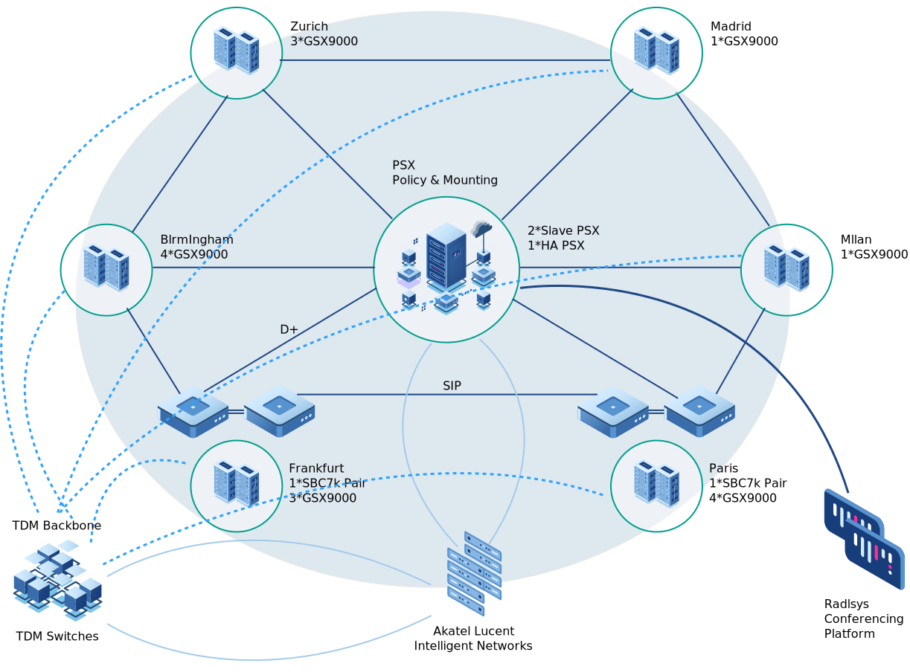

<div class="dashboard-wrapper py-0"> 
    <div class="row">
        <div class="col-lg-3 pt-5">
        <h4>About NTQR</h4>
        <h5 class="my-2">Voice Assets</h5>
        <p class="normal font-weight-bold my-2">IMS</p>
        <ul>
            <li>16 GSX9000 (4*NBS, 7*Hybrid, 5*TDM Gateways)</li>
            <li>2 SBC700 (FRA & PAR) </li>
            <li>3 PSX (1*HA for Positioning & 2*slave)</li>
        </ul>

        <p class="normal font-weight-bold my-2">TDM</p>
        <ul>
            <li>34 TDM Switches(18 *EWSD & 16 *DMS) & 4* STP)</li>            
        </ul>

        <p class="normal font-weight-bold my-2">NGIN</p>
        <ul>
            <li>Nokia IN Platform (GEO redundant FRA & LON)</li>            
        </ul>

        <p class="normal font-weight-bold my-2">Radisys</p>
        <ul>
            <li>Radisys Conferencing Platform (GEO redundant PAR & ZRH)</li>            
        </ul>

        </div>
        <div class="col-lg-9 text-center pt-2">
             
        </div>
    </div>          
</div>